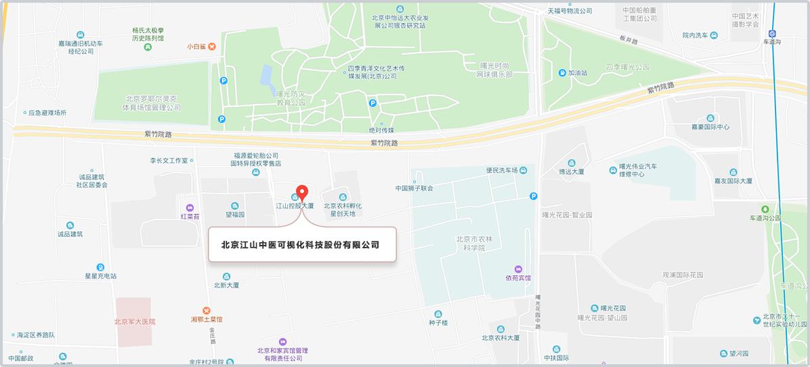

<div class="contact-view">
  <div class="contact-content">
    <p class="title">联系我们</p>
    <p class="two-title">保健守则</p>
    <div class="text-box">
      健康一辈子，调理一辈子。坚持调理的多样化、灵活性，不拘泥于中药，把健康生活方式、饮食文化、传统运动导引纳入中医的“治未病”体系。江山中医可视化健康服务云系统是智能化的大数据平台，通过对健康状况进行监测、跟踪，掌握个体的健康状况。通过收集各类有关身体变化的信息，有针对性地采取多种形式的调理，使身体达到理想状态，使人类由必然王国走向自由王国，实现人类与大自然的和谐统一。
    </div>
    <ul class="adress">
      <li> <b></b> 联系电话： 010-57196103</li>
      <li> <b></b> 地址：北京市海淀区曙光花园望福园东区江山控股大厦A座二层</li>
      <li> <b></b> 公众号： 中医可视化</li>
      <li> <b></b> 手机APP： 扫描二维码下载 </li>
      <li>
        
      </li>
      <li> <b></b> 地理位置图：</li>
      <li>
        
      </li>

    </ul>
  </div>


</div>
